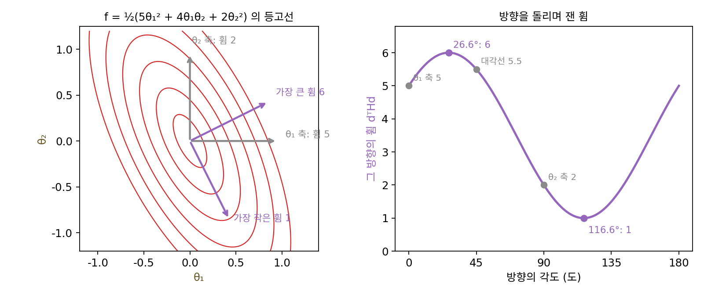
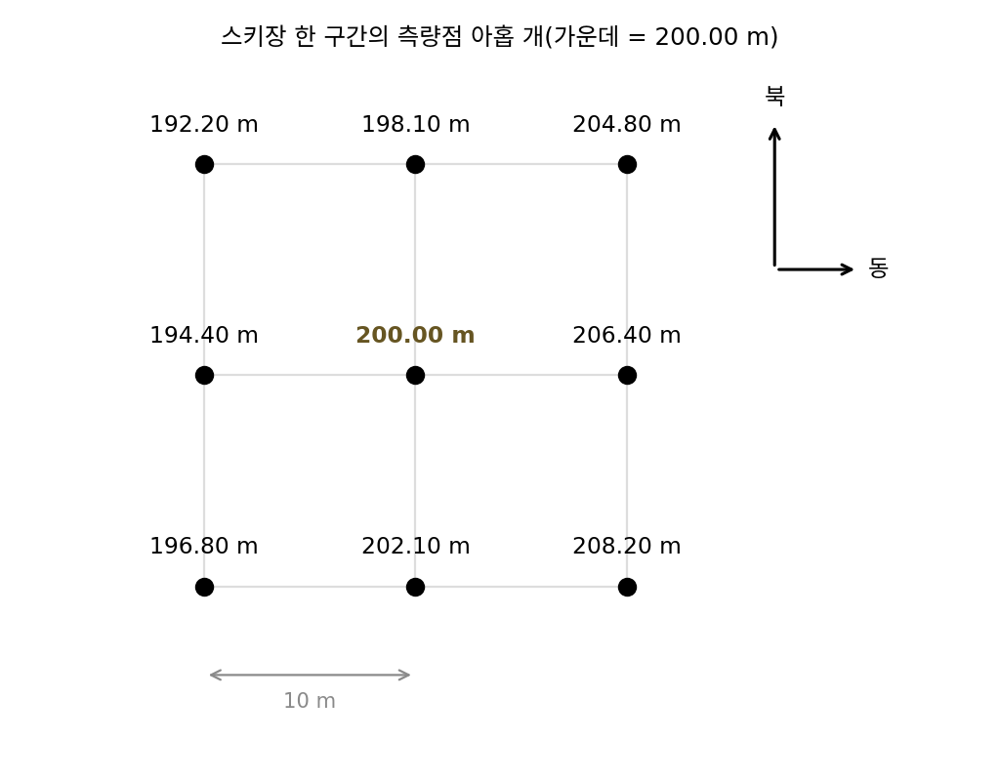
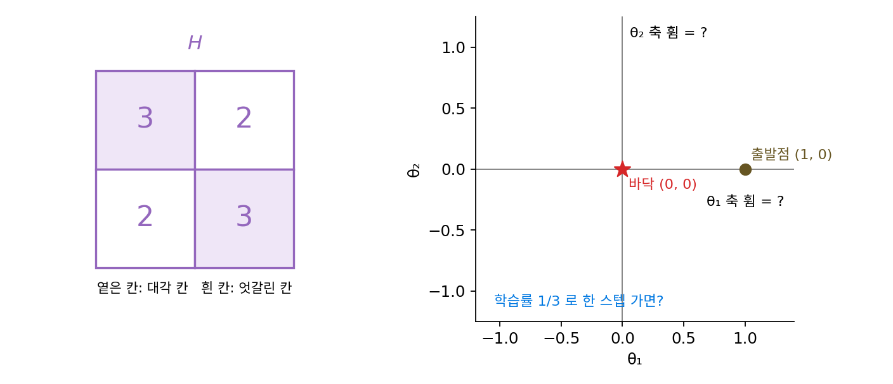
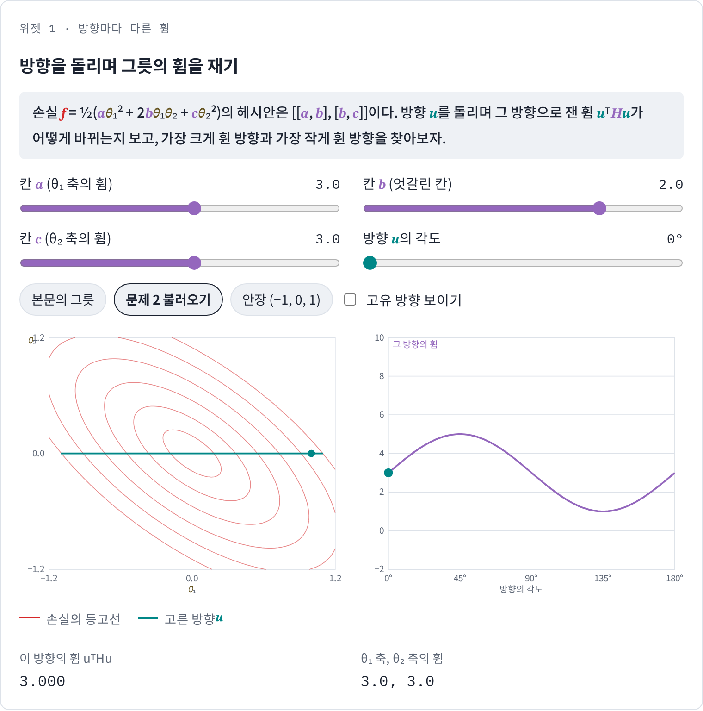
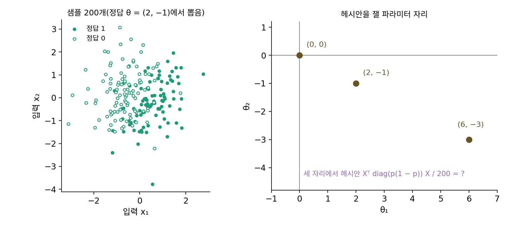

뉴턴법과 헤시안: 곡률을 알면 한 번에
이 장의 물음
길쭉한 골짜기에서 경사하강이 얼마나 느린지는 이미 보았다. 가장 크게 휜 방향과 가장 작게 휜 방향의 곡률 비가 100인 그릇이면, 학습률을 잘 골라도 바닥 근처까지 수백 스텝이 든다. 학습률은 가파른 벽 때문에 키울 수 없고, 그 작은 학습률로 완만한 바닥을 기어가야 하기 때문이었다. 그런데 이 그릇은 식이 ½(θ₁² + 100θ₂²)로 다 드러나 있어서, 최솟점이 원점이라는 것도 어느 방향이 얼마나 휘었는지도 식만 보면 안다. 그렇게 다 아는데도 수백 스텝을 도는 것은 이상하지 않은가?
그래디언트는 지금 자리에서 손실이 어느 쪽으로 얼마나 빨리 바뀌는지만 알려 줄 뿐, 손실이 어떻게 휘어 있는지는 알려 주지 않는다. 휨까지 재면 스텝이 얼마나 달라지고, 파라미터가 수백만 개인 신경망에서 그 휨을 재는 일은 무엇이 어려울까?
이 장은 다음 물음에 차례로 답한다.
- 파라미터가 여럿일 때 손실이 방향마다 얼마나 휘었는지를 어떻게 한 번에 적을까? 방향은 끝없이 많은데 숫자 몇 개면 될까?
- 휨을 알면 바닥까지 한 스텝에 갈 수 있을까? 2차 함수가 아니면 어떻게 될까?
- 휨을 써서 스텝을 정하는 방법이 극소점이 아닌 곳으로 끌려가는 일은 없을까?
- 파라미터가 아주 많은 손실 지형에서는 어떤 평평한 곳이 흔할까?
- 휨을 적은 표가 너무 커서 만들 수 없다면, 그 표 없이 휨을 쓸 수는 없을까?
헤시안: 방향마다 다른 휨을 한 표에
고정된 학습률의 경사하강이 걸리는 스텝 수는 조건수, 곧 가장 크게 휜 방향의 곡률을 가장 작게 휜 방향의 곡률로 나눈 값에 비례했다(여기서 곡률은 2차 미분의 크기, 손실이 얼마나 휘었는가를 가리킨다). 그 느림을 이기려면 방향마다 얼마나 휘었는지부터 알아야 한다. 그런데 손실이 ½(θ₁² + 100θ₂²)처럼 좌표축을 따라 가지런히 휘어 있으면 축 두 개의 곡률만 재면 되지만, 그릇이 비스듬히 놓여 있으면 어느 방향이 가장 가파른지 미리 알 수 없다. 파라미터가 둘만 되어도 방향은 끝없이 많다. 방향을 하나하나 돌려 가며 재야 할까, 아니면 숫자 몇 개면 모든 방향의 휨을 알 수 있을까?
역사: 야코비의 제자가 2차 미분으로 행렬식을 만들다
모든 방향의 휨을 담는 표에는 독일의 수학자 루트비히 오토 헤세(Ludwig Otto Hesse)의 이름이 붙어 있다. 헤세는 1811년 쾨니히스베르크에서 태어나 그곳 대학에서 카를 야코비(Carl Jacobi)의 강의를 들었고, 야코비 밑에서 1840년에 박사 학위를 받았다. 야코비는 함수 여럿의 1차 편미분을 모은 행렬과 그 행렬식(자코비안)을 연구한 사람이다. 헤세는 1842년 3차 곡선과 2차 곡선을 다룬 논문에서, 한 함수의 2차 편미분을 모은 행렬식을 썼다. 1차 편미분 대신 2차 편미분을 표로 놓은 것인데, 헤세 자신은 이것을 「함수 행렬식」이라고 불렀다고 한다. 「헤시안」이라는 이름은 뒤에 영국의 수학자 제임스 조지프 실베스터(James Joseph Sylvester)가 헤세의 이름을 따서 붙였다고 전해진다. 헤세의 관심은 곡선의 모양이었지 최적화가 아니었지만, 2차 편미분을 표 하나에 모으면 휨에 관한 물음이 그 표의 성질로 바뀐다는 생각은 그대로 남았다.

2차 편미분을 표에 모은 게 이름이 붙을 만큼 대단한 일이에요? 지금은 torch.autograd.functional.hessian 한 줄이면 표가 나오잖아요.

헤세가 1842년에 쓴 건 표가 아니라 그 표의 행렬식, 곧 수 하나였어요. 표를 그 자체로 곱하고 뒤집는 대상으로 다루는 행렬 대수는 1858년 아서 케일리(Arthur Cayley)의 논문에서야 정리돼요. 그 전의 수학자에게 2차 편미분 표는 무엇을 뽑아내는 재료였을까요?

음, 행렬식이면 수 하나니까… 곡선의 어떤 점이 특별한지 가르는 판정 값으로 썼겠네요. 그런데 수 하나로 모든 방향의 휨을 다 알 수는 없을 것 같아요.

그래서 헤세의 관심은 곡선의 모양에서 멈췄어요. 표 전체를 들고 「이 방향으로는 얼마나 휘었나」를 묻는 건 행렬을 다루는 말이 생긴 뒤의 일이에요.

그리고 그때는 손실도, 파라미터 수백만 개도 없었으니까, 휨을 알아서 스텝을 고친다는 물음 자체가 없었겠네요.

행렬식으로 줄이지 않고 표를 그대로 두면, 방향 u의 휨은 표의 칸들로 어떻게 계산해요?
비스듬한 그릇의 휨을 재기
방향마다의 휨을 실제로 재 보자. 답을 식으로 확인할 수 있도록, 비스듬히 놓인 가장 간단한 그릇인 2차 함수 f(θ) = ½(5θ₁² + 4θ₁θ₂ + 2θ₂²)를 고른다. 그릇의 바닥(최솟점)은 원점이지만, 가운데 항 4θ₁θ₂ 때문에 그릇이 축에서 비스듬히 돌아가 있다. 원점에서 길이 1인 방향 u로 거리 0.1만큼 가면 손실은 대략 ½ × (그 방향의 휨) × 0.1²이 되므로, 손실을 재고 2/0.1²을 곱하면 그 방향의 휨이 나온다.
| 방향 u | 0.1 간 뒤의 손실 | 그 방향의 휨 |
|---|---|---|
| θ₁ 축 (1, 0) | 0.0250 | 5 |
| θ₂ 축 (0, 1) | 0.0100 | 2 |
| 대각선 (1, 1)/√2 | 0.0275 | 5.5 |
| 반대 대각선 (1, −1)/√2 | 0.0075 | 1.5 |
축 두 개만 쟀다면 가장 큰 휨은 5, 가장 작은 휨은 2로 보이고, 길쭉함은 2.5배쯤이라고 생각했을 것이다. 그런데 대각선 쪽이 5.5로 θ₁ 축보다 더 가파르다. 방향을 1° 간격으로 돌려 가며 재면 가장 큰 휨은 27° 쪽의 약 6, 가장 작은 휨은 그와 수직인 117° 쪽의 약 1이다. 이 그릇의 조건수는 2.5가 아니라 6이다.
그렇다면 방향을 다 돌려 봐야만 알 수 있을까? 그럴 필요 없이, 방향 u = (u₁, u₂)로 거리 t만큼 간 자리를 식에 넣기만 하면 손실은 ½t²(5u₁² + 4u₁u₂ + 2u₂²)이다. 괄호 안이 그 방향의 휨이고, 어느 방향이든 숫자 셋 5, 2, 2만 있으면 계산된다. 위 표의 네 값도 모두 괄호 안의 식 5u₁² + 4u₁u₂ + 2u₂²에서 나오는데, 예를 들어 대각선 방향이면 (5 + 4 + 2)/2 = 5.5다.
헤시안의 세 숫자 5, 2, 2는 그래디언트를 조금 밀어서 잴 수도 있다. 점 (0.3, −0.2)에서 그래디언트는 (1.1, 0.2)인데, θ₁만 0.001 키우면 그래디언트가 (0.005, 0.002)만큼 바뀌고, 0.001로 나누면 (5, 2)다. θ₂만 0.001 키우면 (2, 2)가 나온다. 「θⱼ를 움직일 때 그래디언트의 i번째 칸이 바뀌는 비율(∂(∇f)ᵢ/∂θⱼ)」, 곧 2차 편미분을 칸마다 모은 이 표를 헤시안 (방향마다의 휨을 담은 2차 편미분의 표 / Hessian)이라 하고 H로 적는다. 「헤세 행렬」이라고도 부르지만 이 책에서는 헤시안으로만 쓴다.
미분하는 순서를 바꿔도 2차 편미분은 같으므로(H₁₂ = H₂₁ = 2) 헤시안은 대칭인 표다. 이 그릇의 헤시안은 [[5, 2], [2, 2]]다. 대칭인 표에는 서로 수직인 방향 한 쌍이 있어서, 그 방향들로 표를 곱하면 방향은 그대로 두고 길이만 늘인다. 그 방향이 고유 방향이고 늘이는 배율이 고윳값 λ이다. 이 그릇에서는 (2, 1)/√5 방향의 고윳값이 6, (1, −2)/√5 방향의 고윳값이 1이다. 방향을 돌리며 찾은 가장 큰 휨과 가장 작은 휨이 바로 이 두 고윳값 6과 1이다((2, 1)의 각도는 26.6°라서, 1° 간격으로 잴 때 27° 근처에서 가장 큰 값이 나왔다). 그래서 조건수는 가장 큰 고윳값 ÷ 가장 작은 고윳값으로 계산하면 된다.

ML에서: 선형 회귀의 헤시안은 어디서나 같다
선형 회귀의 손실 ½·평균(θᵀx − y)²을 두 번 미분하면 헤시안은 XᵀX/N(X는 입력을 한 줄에 하나씩 쌓은 행렬, N은 샘플 수)이다. 손실이 2차 함수라서 헤시안에 θ가 들어 있지 않으므로, 손실 지형 어디에서 재도 같은 표다. 입력의 평균을 빼고 크기를 맞추라는 전처리는 이 표의 고윳값을 고르게 만들어 조건수를 줄이는 일이었다. 신경망의 손실은 2차 함수가 아니어서, 헤시안이 자리마다 달라진다. 가장 간단한 경우로 출력이 확률인 로지스틱 회귀에서 헤시안이 어떻게 달라지는지는 아래 문제 3에서 직접 계산한다.
문제 1. 스키장 슬로프의 휨
스키장 한 구간을 10 m 간격으로 측량했다. 가운데 지점과 그 둘레 여덟 지점의 높이(m)가 아래와 같다(위가 북쪽, 오른쪽이 동쪽).
서 가운데 동 북 192.20 198.10 204.80 가운데 194.40 200.00 206.40 남 196.80 202.10 208.20 (가) 동서 방향과 남북 방향의 휨(높이의 2차 미분, 1/m)을 대략 구하라. (나) 가장 크게 휜 방향은 동서 방향인가? 네 귀퉁이 값을 써서 판단하라. (다) 가장 크게 휜 방향과 가장 작게 휜 방향의 휨의 비는?

동서는 (206.40 − 2 × 200.00 + 194.40)/10² = 0.008이고, 남북은 (198.10 − 2 × 200.00 + 202.10)/10² = 0.002예요. 동서가 네 배 가파르게 휘었으니 가장 휜 방향은 동서고, 비는 4예요.
귀퉁이 네 값은 어디에 썼죠?
안 썼어요. 가운데 줄과 가운데 칸만 봤네요.
대각선 방향도 재 봐야 해. 그런데 대각선은 칸 사이가 10√2 m라 번거로우니까 네 귀퉁이로 엇갈린 칸을 재자. (북동 − 남동 − 북서 + 남서)/(4 × 10²) = (204.80 − 208.20 − 192.20 + 196.80)/400 = 0.003이야. 동쪽으로 갈수록 남북 기울기가 바뀐다는 뜻이고, 이게 헤시안의 엇갈린 칸이야.
그럼 헤시안을 다 채워 볼까요? 엇갈린 칸이 0이 아닐 때 가장 휜 방향이 축과 같을 수 있을까요?
헤시안은 [[0.008, 0.003], [0.003, 0.002]]예요. 고윳값을 구해 볼게요… 0.0092와 0.0008이네요.

0.0092면 동서의 0.008보다 크잖아. 그럼 가장 휜 쪽이 동서가 아니야?
응. 큰 쪽의 방향은 (0.92, 0.38), 동쪽에서 북쪽으로 22.5° 돌아간 쪽이야. 엇갈린 칸이 0이 아니면 축 방향은 고유 방향이 아니니까, 축의 휨 0.008은 가장 큰 휨보다 작을 수밖에 없어.
그럼 (다)의 비는요?

4가 아니라 0.0092/0.0008 = 11.5예요.

시험 점수를 국어와 수학 두 과목만 따로 보고 「두 과목 차이는 이 정도」라고 했는데, 두 과목이 같이 오르내리는 걸 빼먹은 거네요. 조교님이 상관까지 봐야 한다고 했던 게 이거구나.
문제 2. 축 방향의 휨이 같으면 둥근 그릇인가
헤시안이 [[3, 2], [2, 3]]인 2차 함수 f = ½θᵀHθ가 있다. (가) θ₁ 축과 θ₂ 축 방향의 휨은 각각 얼마인가? (나) 이 그릇은 둥근가? 둥글다고 보고 학습률을 1/3로 잡아 (1, 0)에서 경사하강을 하면 어떻게 되는가? (다) 고윳값과 조건수는? (풀어 본 뒤 위젯 1의 「문제 2 불러오기」로 확인해 보자.)

대각 칸이 둘 다 3이니까 두 축의 휨이 똑같아요. 둥근 그릇이고, 조건수는 1이에요. 둥근 그릇이면 학습률을 1/3로 잡을 때 한 스텝에 바닥(원점)에 닿죠.
한 스텝을 직접 계산해 볼까요?

그래디언트가 H(1, 0) = (3, 2)니까 (1, 0) − (1, 2/3) = (0, −0.667)이에요. 아직 원점이 아니에요. 다음 스텝은 (0.444, 0), 그다음은 (0, −0.296)… 두 축 사이를 번갈아 오가면서 줄어드네요. 0.001 안에 드는 데 18스텝이요.
엇갈린 칸 2 때문이야. 대각선 (1, 1)/√2 방향으로 재면 (3 + 4 + 3)/2 = 5이고, 반대 대각선은 (3 − 4 + 3)/2 = 1이야. 고윳값이 5와 1이니까 조건수는 5야.

그래요. 한 스텝의 배율을 고유 방향마다 보면요?
학습률 1/3이면 고윳값 5인 방향은 1 − 5/3 = −0.667배, 고윳값 1인 방향은 1 − 1/3 = 0.667배예요. 두 방향 모두 0이 아니니까 한 스텝에 끝날 수 없어요.
대각 칸이 둘 다 3인데 왜 둥근 그릇이 아니야?

대각 칸이 같다는 건 축 두 개로 잰 휨이 같다는 것뿐이야. 둥글다는 건 모든 방향의 휨이 같다는 거고. 엇갈린 칸까지 0이어야 둥근 그릇이야. 선형대수에서 대각합이 같아도 고윳값은 다를 수 있다고 배운 게 이거네.

좌표축만 보고 판단하면 안 되는 거군요. 위젯에서 각도를 돌려 보니 45°에서 휨이 5까지 올라가요.

문제 3. 로지스틱 회귀의 헤시안은 어디서 재느냐에 따라 다르다
입력이 둘인 로지스틱 회귀(편향 없음, 예측 확률 p = 1/(1 + exp(−θᵀx)))의 크로스 엔트로피 손실을 샘플 200개(씨앗 고정, 입력은 표준정규분포, 정답은 θ = (2, −1)인 모델에서 뽑음)로 평균 낸다. 이 손실의 헤시안은 Xᵀ diag(p(1 − p)) X / 200이다. (가) θ = (0, 0)에서 헤시안은 XᵀX/200의 몇 배인가? (나) θ = (2, −1)과 (6, −3)에서 두 고윳값과 조건수는 각각 얼마인가? (다) 헤시안 식에 정답 y가 없는 것을 확인하고, 그 뜻을 말하라.

선형 회귀처럼 헤시안이 XᵀX/200 하나로 정해지겠죠. p(1 − p)는 그냥 상수 배고요.
θ = (0, 0)에서 p는 얼마죠? 다른 θ에서는요?
(0, 0)이면 모든 샘플에서 p = 0.5라서 p(1 − p) = 0.25예요. 그래서 헤시안이 XᵀX/200의 정확히 0.25배, 고윳값은 0.234와 0.262예요. 그런데 θ = (2, −1)에서는 샘플마다 p가 달라서 평균 p(1 − p)가 0.144로 줄고, 고윳값은 0.0495와 0.140, 조건수는 2.83이에요. 상수 배가 아니네요.
(6, −3)에서는 평균 p(1 − p)가 0.056이고 고윳값이 0.0039와 0.062야. 조건수가 15.9까지 커져. 모델이 확신할수록 p가 0이나 1에 붙어서 p(1 − p)가 0으로 가니까, 그 샘플은 휨에 거의 보태지 않는 거야.
그럼 (다)는요? 정답 y가 헤시안 식에 없다는 건 무슨 뜻일까요?
손실의 그래디언트에는 p − y가 들어가는데, 한 번 더 미분하면 y는 상수라 빠지고 p(1 − p)만 남아요. 휨은 모델이 지금 얼마나 확신하느냐로만 정해지고, 맞았는지 틀렸는지와는 상관이 없어요. 그래서 같은 그릇이라도 학습이 진행되며 θ가 커지면 휨이 줄고, 방향마다 휨이 줄어드는 정도가 달라서 길쭉해져요.
선형 회귀에서는 헤시안을 한 번만 구하면 됐는데, 신경망은 스텝마다 그릇 모양이 바뀌는 거네요. 지난 학기 과제에서 처음 몇 에폭에 잘 맞던 학습률이 나중에 안 맞았던 게 이래서였나 봐요.